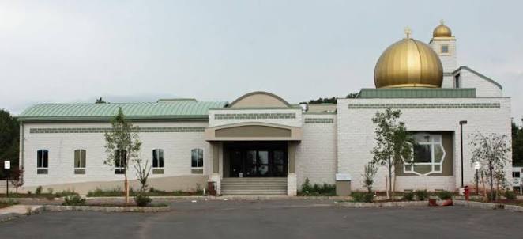
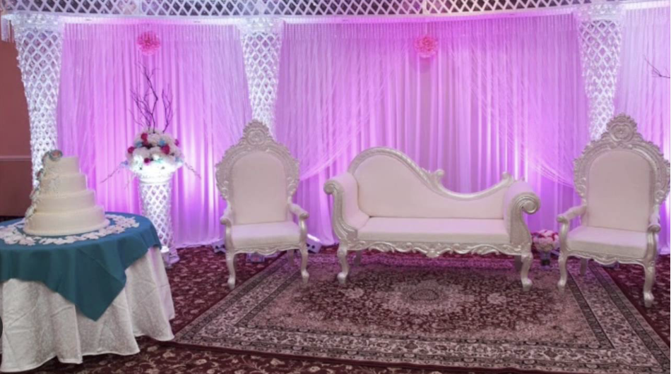
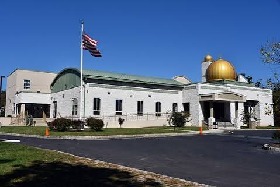
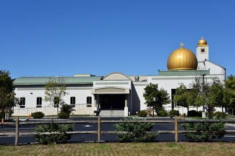
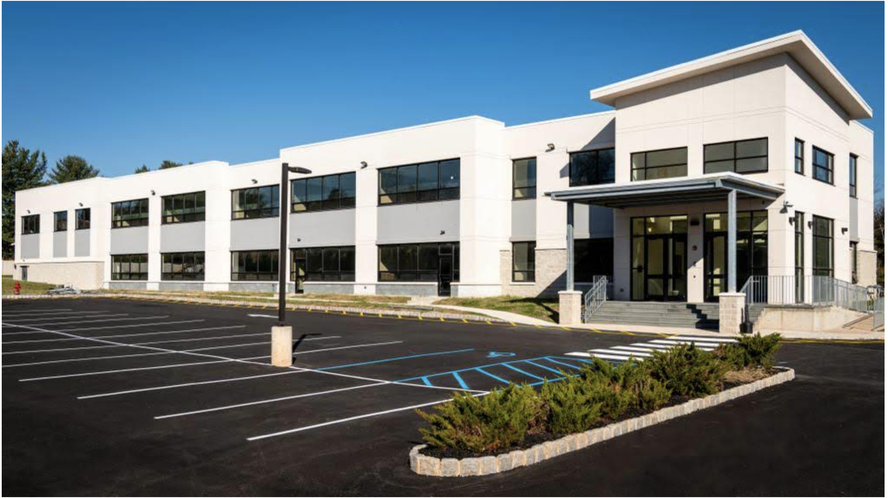
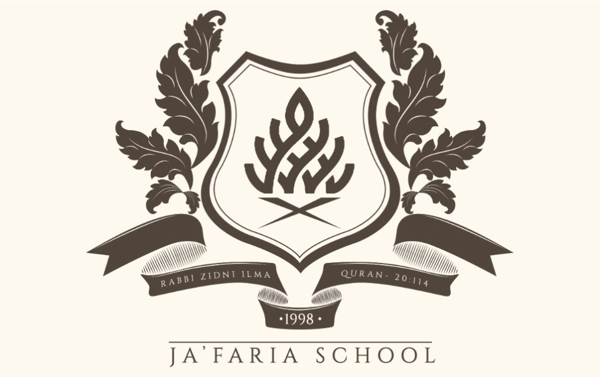

Welcome to Masjid-e-Ali
A Center for Faith, Unity, and Service.
* Shia Ithna-Ashari (Jafari) method — Somerset, NJ
Masjid Daily Open Schedule
The masjid is open 7 days a week for prayer and special programs.
Subject to change throughout the year to accommodate the timings of Salaat.
| Sun | Mon | Tue | Wed | Thu | Fri | Sat | |
|---|---|---|---|---|---|---|---|
| Fajr |
Jamaat 4:30AM Sharp
4:30AM – 6:00AM
Nahj ul Balagha & Ziyara-e-Ashura
|
— | — | — | — | — |
Jamaat 4:30AM Sharp
4:30AM – 6:00AM
Quran Circle
|
| Dhuhr & Asr | Jamaat At Prime Time 12:30PM – 1:30PM |
Jamaat At Prime Time 12:30PM – 1:30PM |
Jamaat At Prime Time 12:30PM – 1:30PM |
Jamaat At Prime Time 12:30PM – 1:30PM |
Jamaat At Prime Time 12:30PM – 1:30PM |
Juma Prayer 12:00PM Sharp 1:00PM – 2:00PM |
Jamaat At Prime Time 12:30PM – 1:30PM |
| Maghrib & Isha | Jamaat At Prime Time 8:30PM – 9:30PM |
Jamaat At Prime Time 8:30PM – 9:30PM |
Jamaat At Prime Time 7:00PM – 8:30PM Dua-e-Tawassul 8:00pm |
Jamaat At Prime Time 8:30PM – 9:30PM Explanation of Islamic Laws |
Jamaat At Prime Time 7:00PM – 8:30PM Dua-e-Kumayl 7:00pm |
Jamaat At Prime Time 8:30PM – 9:30PM |
Jamaat At Prime Time 8:30PM – 9:30PM |
About Masjid-e-Ali
Our history, leadership, and the scholar who guides our community.
Our History
MFI (Muslim Foundation Incorporated) is unique among Islamic centers in New Jersey in that it has an Islamically sanctioned masjid on the premises of the building. The masjid is open 7 days a week for each of the 5 daily obligatory prayers.
With the ever-increasing Shia Ithna-asheri population in Central Jersey, Masjid-e-Ali (a.s) (Muslim Foundation Inc.) embarked on the noble cause of building a mosque, and purchased a building on a 3.3-acre parcel of land at a cost of $550,000. This was a major milestone on a journey to fulfill an absolute need and a long-cherished dream of the community. Most of our members live within a radius of 20 miles of the property.
Mosque is our identity, and by the Grace of Allah SWT the foundation of Masjid-e-Ali (as) was laid on 15th Shaba'an 1427 AH / September 9, 2006. The inauguration ceremony took place on 13th Dhul Hijjah 1431 AH / November 20th, 2010.
Masjid-e-Ali (a.s)'s (Muslim Foundation Inc.) strength lies in its very Constitution. It helps to bring in the right people to the right job through regular elections held every three years.
"Be sure We shall test you with something of fear and hunger, some loss in goods or lives or the fruits (of your toll), but give glad tidings to those who patiently persevere." — Surah al Baqarah 2:155
Masjid-e-Ali (a.s) (Muslim Foundation Inc.) is a charitable, non-profit organization (Tax exemption number: 22-2413703) and its activities are carried out without any profits for its members. All donations received and accretions are used for promoting its aims and objectives. The objective of the Organization is to help Muslims of all faiths — particularly the Jafri faith — to become better human beings in the path of the Ahle Baith (as) and be good citizens of the USA.
Explore MSA
At a Glance
Board of Directors
Directors Emeritus
- Mohammad Sarwat Ali
- Mrs. Parween Sarwat Ali
- Dr. Mohsin Ali
Directors
- Abbas Hassan
- Dr. Aftab Husain
- Dr. Asghar Kharazi
- Dr. Asad Sadiq
- Baqar Rizvi
- Dr. Azim Husain
- Dr. Iqbal Jafri, Chairman of Board
- Br. Iqbal Naqvi
- Br. Mustafa Karim
- Dr. Mustafa Jafri
- Mrs. Naheed Hamedani
- Dr. Parviz Hamedani, Vice Chairman of Board
- Dr. S.M.N. Rizvi
- Dr. Zafar Jafri
- Dr. Zaki Sadiq
Executive Committee of MFI
Members of Executive Committee
- Abbas Hassan
- Ali Raza
- Dr. Mustafa Jafri
- Salman Jafri
- Zaki Rizvi
- Dr. Zaki Sadiq
Become a Member
While Masjid-e-Ali is open to the general public, we do offer a privileged class of service to those members of our community who opt to become Members. There are a number of benefits included with your membership. Creating membership means opening doors for broader participation, keeping our community organized, continuing/reinforcing a democratic voice, and ensuring that the community remains active for the future generation.
Become A MemberWhy Membership Matters
Members help elect leadership every three years, keeping our masjid's governance accountable and rooted in the community it serves.
Resident Scholar of Masjid-e-Ali
Interested in learning more about Islam? Have a question about an Islamic issue? Maulana Rizwan Rizvi is the resident scholar of Masjid-e-Ali. He is available to answer your questions and to provide Islamic guidance.
Moulana Syed Rizwan A. Rizvi
Moulana Syed Rizwan A. Rizvi was born in a family of ʿulamā in Hyderabad, Pakistan. His father, Moulana Syed Tilmiz H. Rizvi, migrated from India with his grandfather, Hujjatul Islam Moulana Syed Izhar ul Hasnain Rizvi.
In the early 1990s his family migrated to the United States. His basic schooling was completed in New Jersey, and he graduated from high school in 1998. Since early childhood he had the inclination and desire to attend Ḥawzah Ilmiyah for extensive Islamic education. He began his religious studies in Chicago, Illinois, under the tutelage of H.I. Moulana Amir Mukhtar Faezi at Imam Ali Seminary, where he studied for one year.
He then attended the Islamic Seminary of Qum in 2000 and studied under some of the most renowned theologians of the Ḥawzah. After completing coursework in Arabic literature, Jurisprudence, Qur'ānic Exegesis, Principles of Uṣūl, Kalām, and Manṭiq, Moulana Rizvi turned his focus toward Islamic philosophy, concentrating in the latter part of his studies on Irfān-e-Islāmī.
Over six years of study at the Ḥawzah, Moulana obtained 204 credits and received a Bachelor's degree in Theology and Philosophy from Jamiatul Mustafa al-Alamiyyah.
Following his studies in Qum, he pursued advanced Arabic fluency in Damascus, enrolling in courses at Damascus University's Arabic Language Institute while periodically returning to the United States to lecture at various Islamic centers.
Education
- Damascus University, Damascus, Syria (2007) — Advanced Level Studies, Colloquial Arabic
- Damascus University, Damascus, Syria (2006) — MA, Classical Arabic
- Wifaq al-Madaris of Shia, Lahore, Pakistan (2006) — Shahadat al-Alamiyah (M.A. Equivalent)
- Jamiatul Mustafa Al-Alamiyah, Qom, Iran (1999–2005) — Bachelor's, Theology and Philosophy
- Imam Ali Seminary, Chicago, IL (1999–2000) — Ḥawzah Muqaddamāt
Literary Works
- Translated from Farsi to English: Bargustay Kitab wa Sunnat by Allamah Askari
- Thesis: Asma wa Sifat-e-Ilahi az Deedgahe Nahjul Balagha
- Various articles on Taqlid, Marriage, and Ibadat, 2007–Present
Contact & Office Hours
Contact Our Resident Scholar
If you have any questions about Islam or need spiritual guidance, our resident scholar, Maulana Rizwan Rizvi, is available to assist you. Feel free to submit your questions online using the form below, and Maulana Rizwan Rizvi will respond to your inquiry as soon as possible:
Services
From funerals to family celebrations, our community offers support at every stage of life.
Funeral Services (Janazah)
For ghusl and burial arrangements, our community is here to support families through every step.
Maulana Rizwan Rizvi: 609-638-1152 / 732-564-1331
Cemetery grave plots are available at Greenwood Cemetery, 1800 Hamilton Avenue, Hamilton, NJ 08619.

Banquet Hall Rental
Host your family or community event in our beautiful banquet hall — ideal for weddings, majalis, and gatherings.

The Library / Become a Patron
Since its 2015 inauguration, our library has grown to over 1,000 books for readers of every age — from preschoolers to adults.
Email: masjidealilibrary@gmail.com
Book donations are always welcome. Ask about our current fundraising raffle.

Community Services
Masjid-e-Ali supports members of our community with guidance, referrals, and assistance beyond religious programming.

Sadiq School
A full-time Islamic school located on the MFI campus, serving students from Early Childhood through 6th grade.

Jafaria School
Serving the Islamic community of Central Jersey since 1998, with weekend classes in Tarbiyah, Quran, and Salaat.
Our Schools
Faith-centered education for children of every age, from full-time schooling to weekend classes.
Sadiq School
Sadiq School is a full-time Islamic school that in academic year 2026–2027 will serve students from Early Childhood Education (2.5–4 years old) through KG–6 grades. Our state-of-the-art facility is located in Somerset, New Jersey, at the back of the MFI campus, surrounded by open fields where students explore and learn alongside their teachers.
Holistic development is achieved by nurturing curiosity, inspiring design thinking, fostering collaboration, and embracing our values in a caring Islamic environment. Our well-trained, qualified teachers create engaging and supportive learning opportunities, guided by data-driven benchmarks like MAP testing.
Alongside English Language Arts, Mathematics, Science, and Social Studies, students take Digital Literacy, Arts, Quran, Islamic Studies, and Physical Education — plus after-school clubs in Sports, Gardening, Math Olympiad, Computer Tech, STEM, and Performing Arts.
Mission
Faith, knowledge, family, and community are the key building blocks of a student's success. Sadiq School aims to graduate young men and women who think critically and creatively, have a strong academic foundation, and hold a deep understanding of their Creator, the Quran, and the Ahlul-Bayt.
Vision
Our vision is to be a beacon of excellence in education, nurturing well-rounded individuals who embody the values of Islamic faith, empowered to think independently and engage in critical inquiry while holding onto moral integrity and a deep connection to their faith.
Jafaria School
The Jafaria School has served the Islamic community of Central Jersey since 1998, offering weekend religious education for students of all ages.
Sunday Schedule
- 10:30AM–11:40AM: Tarbiyah Class
- 11:45AM–12:55PM: Quran Class
- 1:00PM–1:30PM: Salaat
- 1:30PM–2:00PM: Lunch
- 2:00PM: Dismissal
* Class timings shift in March and November for Daylight Savings Time, and periodically to adjust for Salaat timings.
Teacher, Parent, and Student Portals are available (including Google Classroom & Meet access). Volunteer opportunities are open for the 2025–2026 school year.
Registration for the 2026–2027 school year will open soon. The first day of the 2026–2027 school year is expected to be Sunday, September 13th, 2026.
Visit Jafaria SchoolUpcoming Programs
Majalis, lectures, and community gatherings at Masjid-e-Ali.
Donate
Every contribution sustains our masjid, our schools, and the services we provide to the community.
Venmo Donations
Send directly via Venmo.
Contact Us
Questions about prayer times, events, or getting involved at Masjid-e-Ali? We're glad to hear from you.
Get In Touch
Live Broadcast
Join us live for Friday prayers and special programs.
English
Not broadcasting live right now.
Check back during Friday prayers or special programs.Urdu
Not broadcasting live right now.
Check back during Friday prayers or special programs.